Work with Tables of Graph Data The Table panel displays tables of nodes of a category (or edges of a relationship) which are currently visible in the graph. Each table row represents a single node or edge, and its property values appear in the table columns. Basic tables are available as soon as you open the Table panel. You can scroll through tables, re-arrange columns, fly to a node or edge in the graph, search and select data by property value, and export selected data. 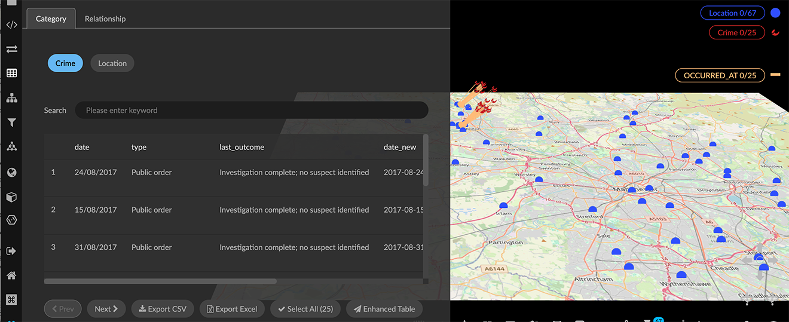 From a basic table you can display an Enhanced Table that includes all the visible data. The Enhanced Table is available from any basic table, and provides advanced search, selection, editing, and export capabilities. 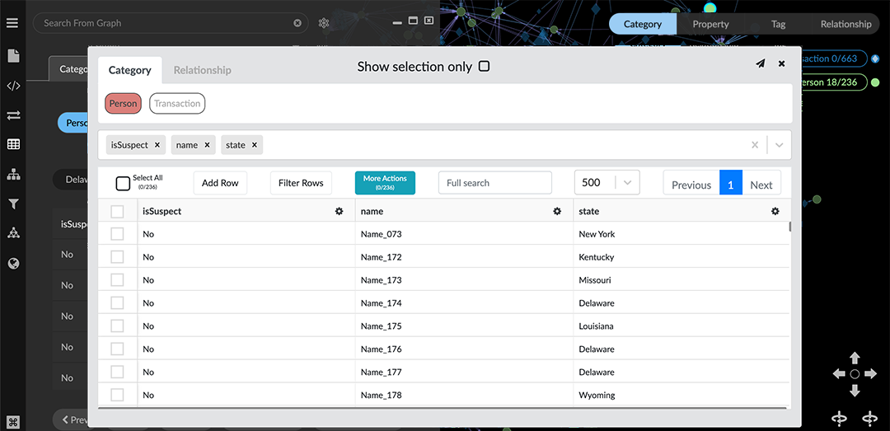 Working with Basic Tables In a basic table you can: Skim data in the tables and review properties. Click a table row to center the graph on that node or edge. Search a table for nodes (or edges) with that property value. Select the nodes or edges currently visible in the graph. Export all or part of a table as a CSV or Excel file. Display and Review a Table To display a basic table: Open the Table panel, and choose either the Category or Relationship tab. Click a category (or relationship) name to display the table of its nodes (or edges) currently visible in the graph. With no data selected, tables include all the data. If you select data, basic tables include only that selection. You can now review the table contents: Click Next or Previous page controls to review the included node (or edge) data that’s included. 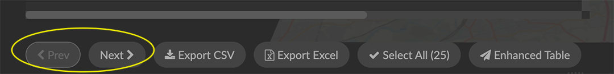 Use the scroll bars to review the properties listed in the table columns. 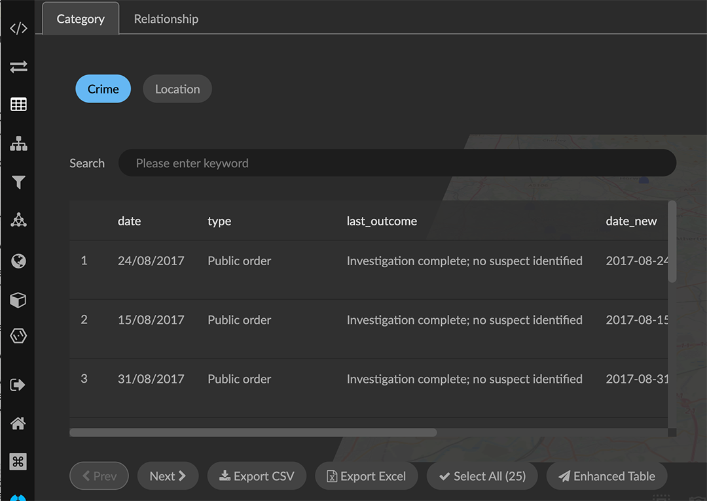 By default, tables (like information windows) include all property names in alphabetical order. This may make it hard to review properties of immediate interest. In the Project panel and Category or Relationship tabs, you can re-order properties at any time, and also temporarily mark properties you don’t need to see as Hidden. Center the graph on a table entry Click a single table entry to center the view on it in the graph (but not select the node (or edge). 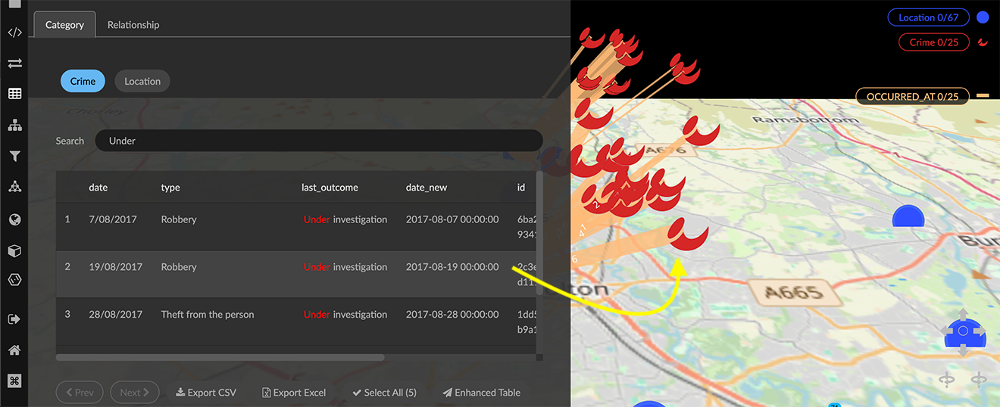 Search and select from a table The Select All button at the bottom of the panel lets you select the data in the graph that corresponds to the table entries. The button shows the number of rows in the table currently available in the table (whether narrowed by a search or not). As you enter a search term, this number is updated accordingly. To search and select from a table: Open a table, and enter a search term in the table’s search bar. The table includes only the nodes (or edges) with matching property values. 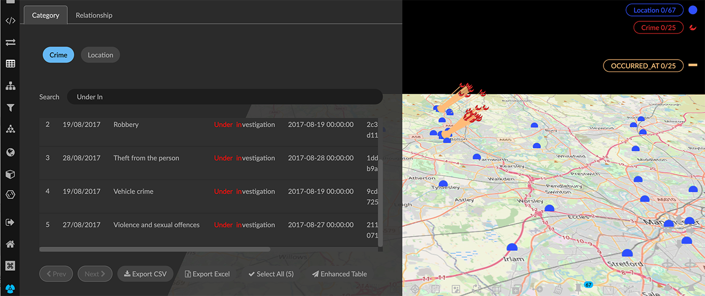 Click Select All to select the current table entries. 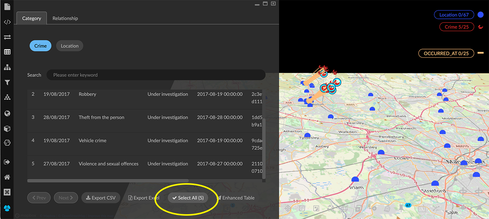 Export a CSV or Excel from a table You can export a flat CSV or Excel file with all or part of a current table to your local system. To export CSV or Excel from a basic table: Open a table. Optionally, use a search term in the table’s search bar to narrow down the data to be exported. Click either: Export CSV to download a flat CSV file. Export Excel to download an .xlsx file. 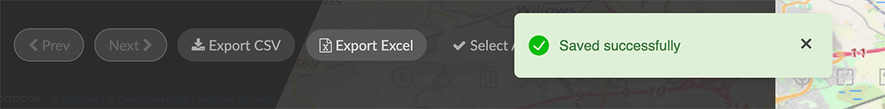 Properties marked as Exclude in the Project panel and Category (or Relationship) tabs will not be exported. Working with the Enhanced Table In the Enhanced table you can change the name of a category, relationship, or property, re-arrange columns, add or remove data, edit property values, search, mark data for selection, and export all or part of the data. Open the Enhanced Table The Enhanced Table is available from any basic table, and displays all the data currently visible in the graph space, whether selected or not. To open the Enhanced Table: Optionally, select data of interest. Open the Table panel, and select an available Category or Relationship. If you’ve selected data, basic tables display only the categories or relationships in the selection. However, any enhanced table will include all the visible data. Click the Enhanced Table button on the bottom right of a table. The enhanced table is initially tethered to the graph space. Optionally, click the airplane icon at the upper right corner to display it in a separate browser window. 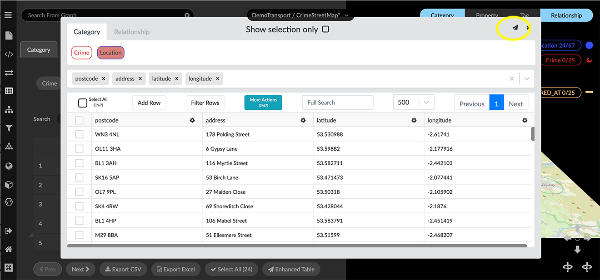 Reformat and Search the Enhanced Table You can reformat and search an enhanced table to focus on data of interest as follows: Show only the data currently selected in the graph. Click the Show selection only checkbox at the top of the window. 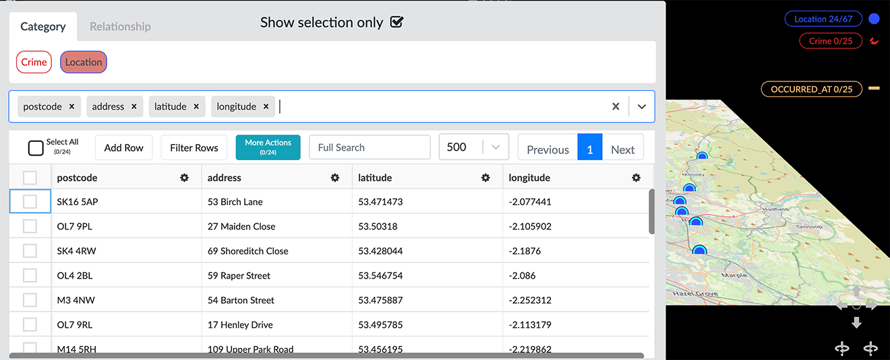 Select properties to display. Open the properties list dropdown menu to select additional properties, or click the x next to a property name to remove it. Properties are displayed in columns in the order they are selected. 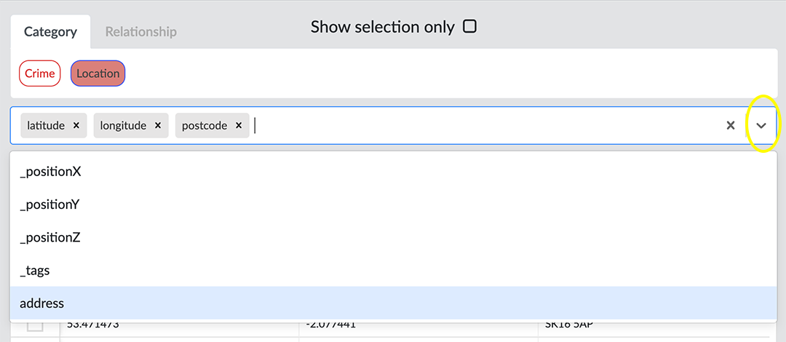 Re-order column headings. Click and drag a column heading to the right or left. Sort a property by its values. In a column heading, click the arrow for a sort in ascending or descending order. Search property values in the entire table. Enter a search term in the Full Search text box. 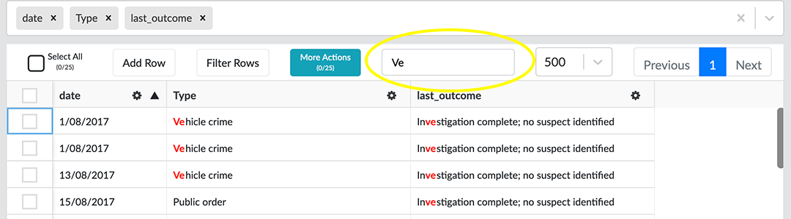 Filter rows by a specific (column) property value. Click the Filter Rows button enter a search term for property values in one or more columns. 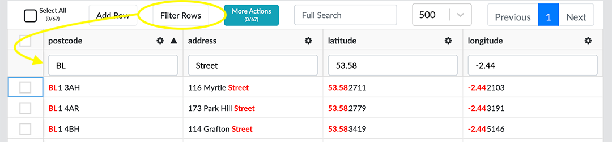 Mark table rows and select them in the graph. Click one or more checkboxes in the first table column. The More Actions button now shows the number of currently selected rows. Click More Actions and Mark Selected in Graph. You can then go to the project space and work with the selection, for example to add a tag. 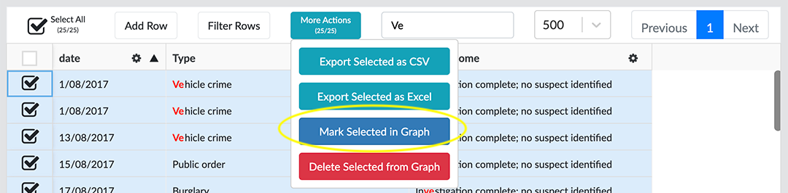 Export marked data from an enhanced table You can export marked data (the entire table, or only selected rows) as a CSV or Excel file. The More Actions button shows the number of currently selected rows. To export data from the enhanced table: * Click More Actions and select either: Export Selected as CSV or Export Selected as Excel + image::/v2_17/04_06_03g_EnTableExport.png[,520,380,role=text-left] + NOTE: Properties marked as Exclude in the Project panel and Category (or Relationship) tabs will not be shown in the Enhanced Table, and cannot be exported. Editing in the enhanced table You can edit most of the elements of your graph data in the enhanced table. These edits take immediate effect in the project. Editing an enhanced table takes immediate effect in the project and cannot be reverted. Before editing, and especially before deleting selected data or deleting a property, save a View or take a Snapshot. Then if you’ve removed data by mistake, you can revert the action. You can: Re-name any category or relationship. Double-click a label (e.g. Location), enter a new name and hit return. 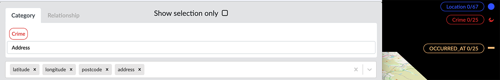 Re-name any property. Click the settings icon next to the property’s column heading, and select Rename. Enter a new name and click Save. 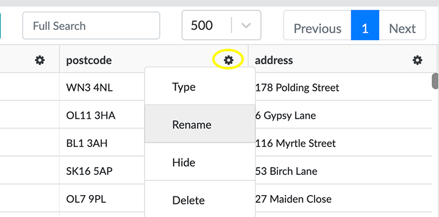 Edit a property value. Click in the table cell and edit the value. Add a row (node). Click Add Row and enter property values. This immediately adds a new node to the graph. If you add a row by mistake, you can select the node in the graph and delete it. 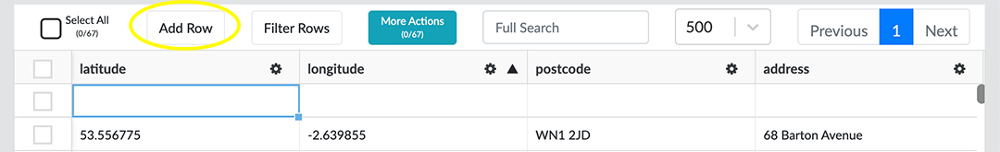 Select and delete rows. Click one or more checkboxes in the first table column, click More Actions and Delete Selected from Graph. This immediately deletes the nodes or edges from the graph. 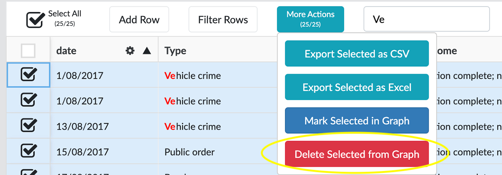 Delete a property. Click the settings icon next to the property’s column heading, and select Delete. This immediately deletes the property and its values from all the data in the graph. The property name disappears from tables and information panels.